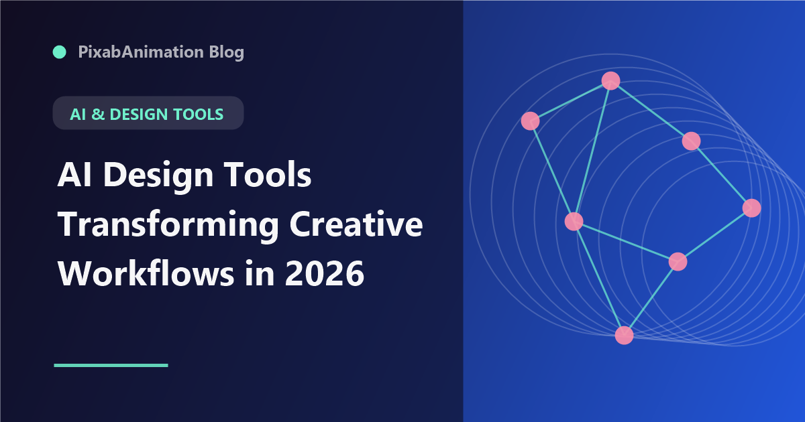

AI Design Tools Transforming Creative Workflows in 2026

The design tools landscape has undergone a radical transformation. Artificial intelligence has evolved from a novelty feature to a core capability in virtually every major design application. From Adobe's Firefly ecosystem to Figma's AI features and specialized AI-first design tools, designers now have access to capabilities that were science fiction just a few years ago. This guide explores the most impactful AI design tools and how creative professionals are integrating them into their workflows.
The key insight driving this transformation is that AI does not replace creative thinking — it amplifies it. By automating technical execution, generating ideas, and accelerating repetitive tasks, AI tools free designers to focus on strategy, creativity, and human-centered design decisions. Understanding which tools to use for which tasks is becoming an essential design skill.
Adobe Firefly Ecosystem
Adobe's Firefly generative AI has become deeply integrated across the Creative Cloud suite. In Photoshop, Generative Fill and Generative Expand have become indispensable tools for photo compositing, background replacement, and creative exploration. Designers can select an area, describe what they want, and receive photorealistic results that match the existing lighting, perspective, and style of the original image.
In Illustrator, Firefly-powered tools enable vector generation from text prompts, automatic color palette extraction, and smart object manipulation. After Effects benefits from Firefly's video capabilities, including generative video fill, automatic rotoscoping, and AI-assisted motion tracking. The tight integration with existing Adobe workflows means designers can incorporate AI capabilities without leaving their familiar tools.
Figma AI and Collaborative Design
Figma has embedded AI capabilities throughout its collaborative design platform. Figma AI can generate multiple layout variations from a text description, automatically create design system components, suggest accessibility improvements, and even generate production-ready code from designs. The AI layer search allows designers to find components, styles, and assets using natural language queries instead of navigating complex component hierarchies.
For motion designers, Figma's AI-powered prototyping tools can suggest micro-interactions, generate transition animations between screens, and create responsive layout variations automatically. The collaborative nature of Figma means that AI-generated design variations can be shared, discussed, and refined with team members in real-time, accelerating the design iteration process significantly.
AI-Powered Image and Video Generation
Standalone AI generation tools have matured dramatically. Midjourney 7, DALL-E 4, and Stable Diffusion 4 offer photorealistic image generation with unprecedented control over composition, style, lighting, and detail. For video, Runway Gen-3 Alpha, Pika Labs 2.0, and Sora by OpenAI have made text-to-video generation practical for professional use, producing clips up to 60 seconds with consistent characters and coherent scenes.
For motion designers and content creators, these tools serve different purposes. Image generation tools are invaluable for creating concept art, mood boards, backgrounds, and asset references. Video generation tools excel at creating short-form content, social media videos, and animated elements that can be incorporated into larger motion design projects. The key is understanding each tool's strengths and limitations.
AI-Assisted Layout and Composition
Tools like Galileo AI, Visily, and Uizard have pioneered AI-first design by generating complete UI designs from text descriptions. These tools analyze the description, generate a sitemap and user flow, and produce high-fidelity designs with appropriate components, spacing, and visual hierarchy. While these AI-generated designs typically require human refinement, they dramatically accelerate the early stages of the design process.
For print and branding designers, AI layout tools can generate multiple compositions from the same content, suggesting optimal arrangements based on design principles like hierarchy, balance, and contrast. Tools like Kittl AI and Designify offer specialized AI features for print-on-demand, branding, and social media design, making professional-quality design accessible to non-designers while accelerating workflows for professionals.
AI Color Palette and Typography Tools
AI-powered color tools like Khroma, Colormind, and Adobe Color's AI features can analyze brand guidelines, reference images, and design contexts to suggest harmonious color palettes that are both aesthetically pleasing and accessible. These tools consider color theory principles, contrast ratios for accessibility, and emotional associations of color to provide palette recommendations that would take hours to develop manually.
For typography, AI tools like Fontjoy, Typeface AI, and Fontspring Matcherator can analyze design contexts and suggest font pairings that work harmoniously together. These tools consider x-height relationships, weight contrast, and historical compatibility to recommend combinations that professional typographers would approve of. Variable font axis recommendations are another AI-driven feature that helps designers optimize type for different contexts and screen sizes.
AI in the Design Process
Integrating AI tools into a coherent design workflow requires thoughtful planning. The most effective approach treats AI as a collaborative partner at each stage of the design process. During research and ideation, AI can analyze competitor designs, generate mood boards, and suggest creative directions. During conceptualization, AI can generate multiple variations of key design elements, allowing designers to explore more options in less time.
During production, AI handles technical execution — generating assets, applying styles, and automating repetitive tasks. During refinement, AI provides quality assurance by checking accessibility, consistency, and adherence to design system rules. Throughout the process, the designer maintains creative direction, making strategic decisions and applying human judgment that AI cannot replicate.
Learning and Adapting to AI Tools
The rapid pace of AI tool development means that designers need strategies for continuous learning and adaptation. Following AI design communities, participating in beta testing programs, and dedicating time to experimentation are essential practices. Many designers find that spending 10% of their time exploring new AI tools and techniques pays dividends in productivity gains across the remaining 90% of their work.
For teams, establishing AI usage guidelines and sharing best practices helps ensure consistent, effective AI adoption. Creating libraries of effective prompts, documenting AI-assisted workflows, and sharing examples of successful AI integration helps teams learn from each other and avoid common pitfalls. The designers and organizations that invest in AI literacy will have significant competitive advantages in the coming years.
"AI does not replace the designer — it expands what a designer can achieve. The most exciting designs of tomorrow will come from humans and AI working together, each contributing their unique strengths." — Design Technology Report, 2026
The AI design tools available in 2026 offer unprecedented capabilities for creative professionals. By understanding the landscape, integrating tools thoughtfully, and maintaining focus on human-centered design principles, designers can leverage AI to produce work that is more creative, more polished, and more impactful than ever before.